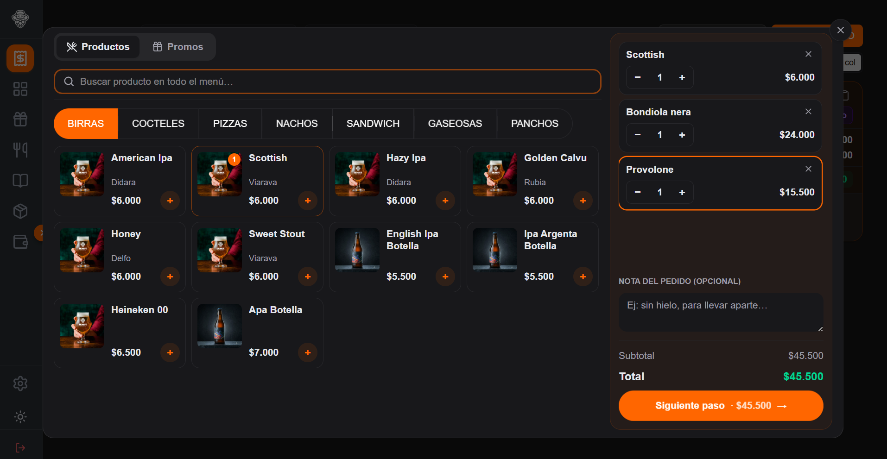
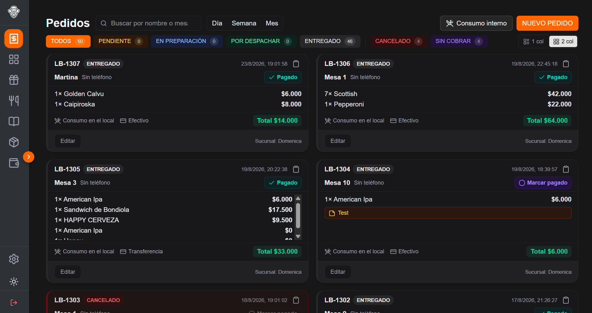
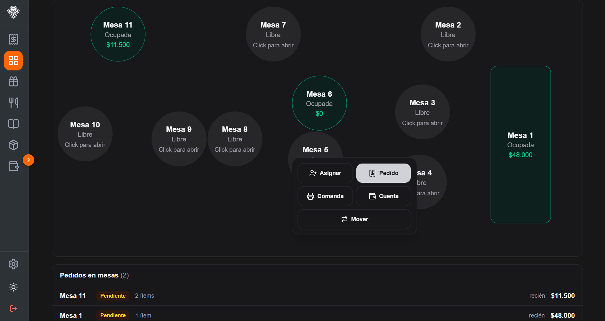
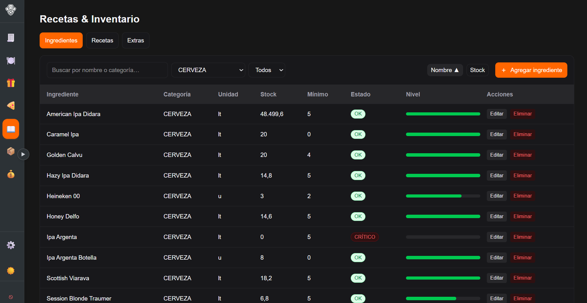
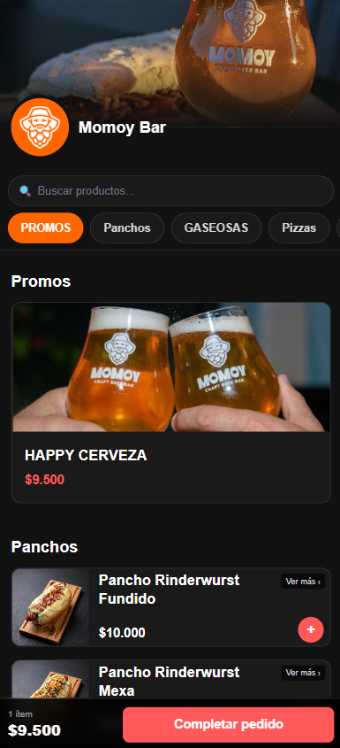
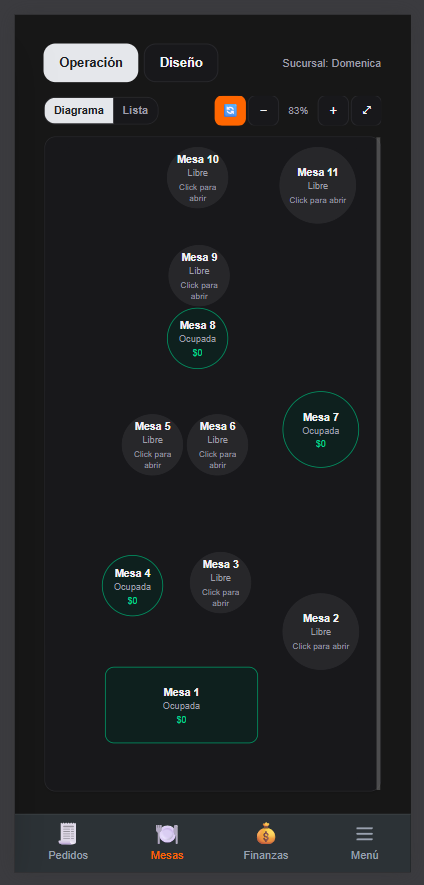

Pedidos
Carga un pedido en segundos: menú con búsqueda, extras por producto, promos armadas por combos, y comanda a cocina automática apenas se guarda.
Infraestructura operativa y de datos para restaurantes, bares y dark kitchens en mercados sin acceso a crédito
Cada turno que pasa por Ordeo construye un historial de ventas verificado — la operación diaria de tu local, convertida en el activo que hoy le falta al crédito pyme en Venezuela.




En uso real, todos los días, en locales piloto con clientes reales.
El proyecto
El crédito pyme en Venezuela cayó a mínimos históricos en la última década, y recién ahora empieza a mostrar señales de reactivación — pero todavía no llega a los negocios sin historial bancario formal, como la mayoría de los restaurantes. El sector gastronómico, mientras tanto, proyecta un crecimiento del 40% para 2026. Ordeo conecta ambas cosas: cada pedido genera el historial que hoy reemplaza la garantía bancaria que la mayoría no tiene — y ese historial, una vez que abre acceso a capital, vuelve a generar más operación y más datos. Un círculo que se refuerza solo.
Este modelo ya existe: Toast lo probó con capital de trabajo para restaurantes en Estados Unidos, y Cashea ya generó confianza en Venezuela con lógica de suscripción de riesgo. Ordeo aplica la misma lógica a la operación diaria de tu local.
El problema
Para cuando el dueño ve los números, el turno ya terminó — y ya es tarde para hacer algo con esa información.
Un panel, seis módulos
Carga un pedido en segundos: menú con búsqueda, extras por producto, promos armadas por combos, y comanda a cocina automática apenas se guarda.
Diagrama visual del salón: arrastra, redimensiona y gira cada mesa. Cierra la cuenta eligiendo el método de pago en un solo paso, sin planillas aparte.
Carga productos al menú y pausa cualquiera en tiempo real, sin que el cliente lo siga viendo. Arma tus propias promociones y combos, a tu gusto.
Cada plato descuenta el stock según su receta real, ingrediente por ingrediente — así no le vendés a alguien algo que ya no tenés.
Vencimientos y cuánto le debés a cada proveedor, siempre a la vista — sin tener que llamarlo para preguntar.
Caja de turno, ventas por método de pago y reporte de ingresos/egresos del día — la misma foto que vas a necesitar el día que alguien te pregunte "¿cómo venimos?".
Seis módulos en producción, usados todos los días en pilotos reales — y cada acción en ellos suma al historial de datos que sostiene la siguiente etapa de Ordeo.
Así se ve de verdad
El cliente arma el pedido desde el celular. Si paga por transferencia, coordina por WhatsApp — con Mercado Pago, el pago se gestiona solo.

El mismo panel, sin recortar funciones, corriendo en el celular del mozo.

Cómo funciona
Desde el mostrador, la mesa, o el menú digital que tu cliente abre en el celular — esencial para las dark kitchens.
Apenas entra el pedido, la comanda ya está en cocina.
Se cierra en un solo paso — lo cierra el mozo en la mesa, o lo confirma el cliente desde el celular.
Ventas, stock, ingresos y egresos del turno se actualizan solos, turno a turno — sabes cómo vas sin esperar a fin de mes.
Cada pedido que pasa por Ordeo queda como parte de un historial de ventas verificado — la base con la que, más adelante, tu negocio puede acceder a capital de trabajo mediante un scoring propio, sin depender de la banca tradicional.
Roadmap
Sin vueltas: esto es en qué estado real está cada parte, no una lista de promesas.
Pedidos, Mesas, Menú, Recetas/Inventario, Proveedores y Finanzas, en uso real todos los días en locales piloto con clientes reales. Reglas de seguridad de datos por rol y sección ya implementadas.
Pasar de una instalación separada por local a una arquitectura multi-tenant: una sola plataforma y base de datos donde sumar un negocio nuevo es crear una cuenta, no desplegar de nuevo. La base para escalar rápido, con cada negocio nuevo sumándose en minutos.
Que el cobro pase por Ordeo en el momento del cierre de cuenta, no que se registre a mano después — el primer paso hacia datos de venta verificados en tiempo real, empezando por QR dinámico en el primer piloto.
Llevar el mismo sistema que ya funciona todos los días en los pilotos actuales a locales en Venezuela, con el contexto y la red local para hacerlo bien desde el primer negocio — pensado también para operar con cortes de conexión frecuentes, no solo para conexión estable. Incluye buscar intermediarios de pago locales (como Megasoft) para integrar la verificación automática de pagos con tarjeta y Pago Móvil.
Conectar el panel con las apps de delivery más importantes para que esos pedidos entren directo al mismo flujo de cocina y stock, y ver las métricas de cada local en una misma vista comparativa.
Cada negocio que opera en Ordeo genera un historial real de ventas verificado. Incluso sin tener historial bancario ni garantías tradicionales, ese historial es la base para ofrecer adelantos de capital de trabajo — la etapa donde todo lo anterior se convierte en el activo financiero del negocio.
Ver demo
Dos accesos con datos de prueba, listos para explorar ahora mismo — el menú que ve tu cliente, y el panel que usás vos.
Probá el mismo menú que ve tu cliente: elegí productos, armá un pedido de delivery o take away, y llegá hasta confirmarlo — con datos de prueba.
Probar el menú →Entrá al panel completo con datos ficticios ya cargados: pedidos, mesas, menú, inventario, proveedores y finanzas — el mismo sistema que usan los locales reales.
Probar el panel →Hablemos de cómo crecer juntos.